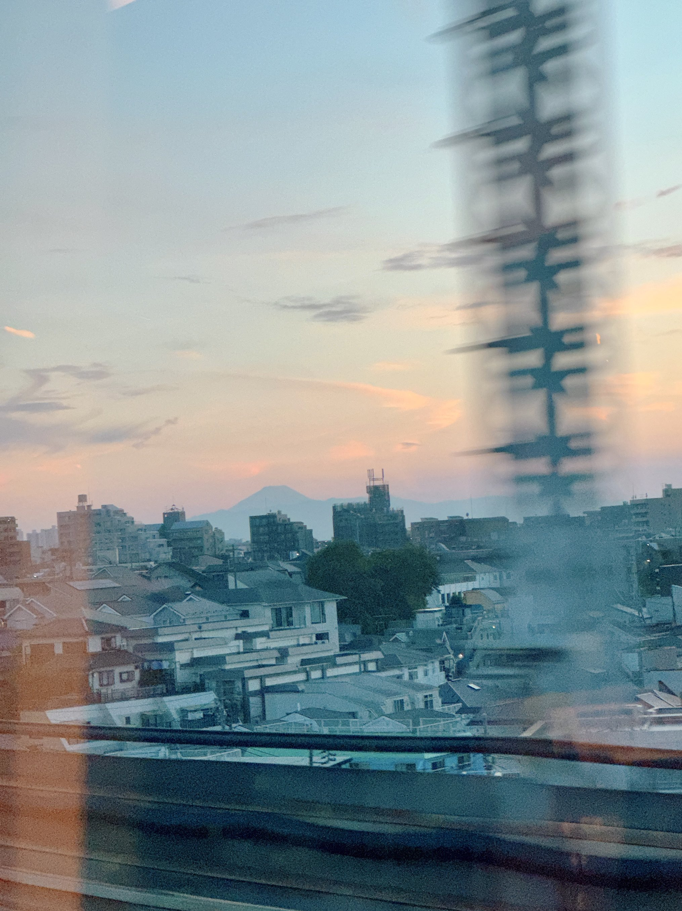
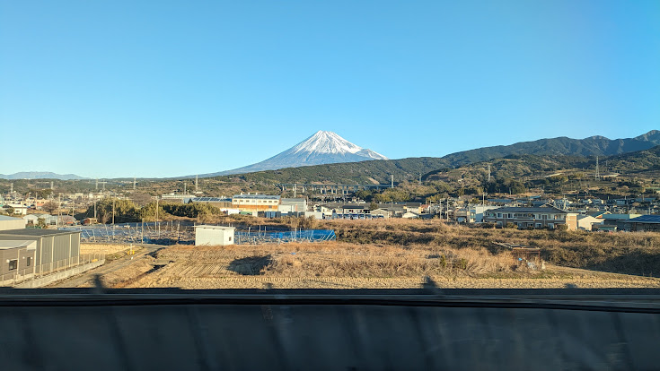
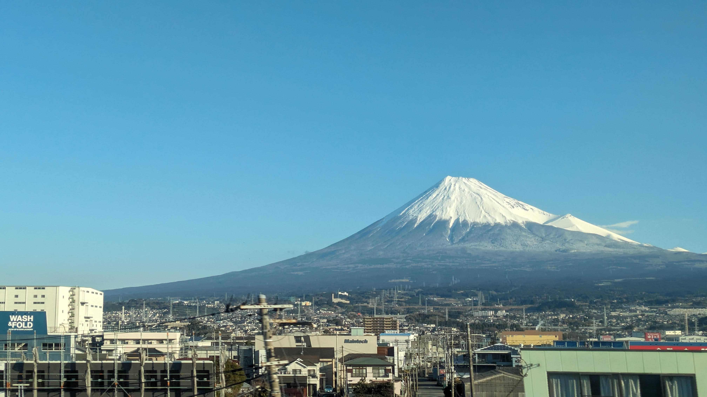
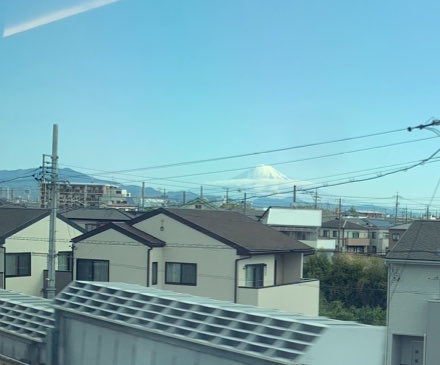
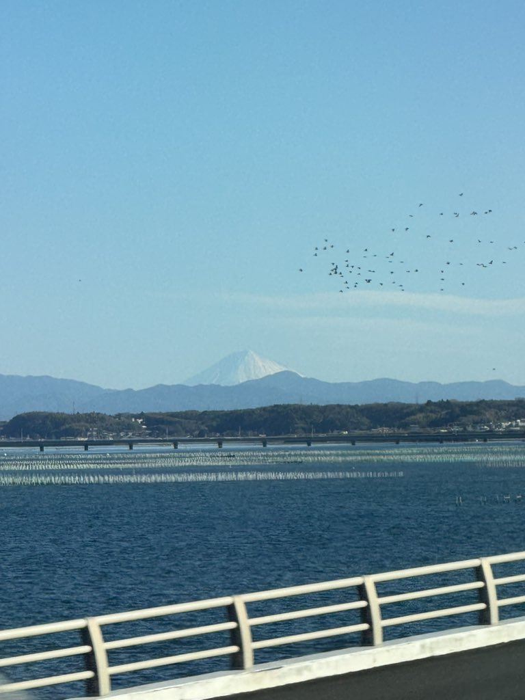

WEATHER FROM THE WINDOW
Mt. Fuji Visibility ForecastBeta
Will Mt. Fuji be visible from the Shinkansen today? Compare clouds around the summit and the clarity of the air at five viewing areas. Choose your train, boarding station and direction, or enter a departure time, to check conditions when you pass each view.
How to read this forecast
Hourly estimates for five viewing areas along the Tokaido Shinkansen, using weather data around the summit and each viewpoint. These are forecasts, not live sightings; cloud and haze can change before your train arrives.
Weather data: Open-Meteo. Visibility estimates: Shinkansen Window (beta). How the estimate works.
All departure and forecast times are in Japan time (JST, UTC+9).
Will Mt. Fuji be visible from the Shinkansen today?
Two things matter: cloud must leave the summit clear, and the air between your train and the mountain must be transparent enough. The forecast above estimates these conditions separately for the five viewing areas along the Tokaido Shinkansen.
Dry winter and early-spring days often offer the clearest views. In humid summer weather, haze can hide a distant mountain even under a blue sky. Clear air after rain can occasionally make a summer view possible too.
Mornings often give clearer distant views than afternoons. Later in the day, the mountain may appear as a silhouette instead of showing the detail of its slopes. The hourly forecast helps you compare conditions around your passing time.
Four of these views are on the Seat E, mountain side. Left-Side Fuji, just after Shizuoka when travelling toward Shin-Osaka, is the brief exception on the Seat A, sea side. If cloud hides the mountain, explore the ideas for a cloudy day.
Five places to see Mt. Fuji from the train
These five views are listed in order from Tokyo toward Shin-Osaka. The seat side and distance describe each viewpoint; the times from Tokyo are rough Nozomi/Hikari estimates. Use the train selector above for your service’s passing times.

Mt. Fuji from Ota Shinagawa → Shin-Yokohama (Ota, Tokyo)
Look beyond Tokyo’s rooftops for a small, distant Mt. Fuji. At roughly 95 km away, this early glimpse is easiest to catch when the air is exceptionally clear. Think of it as a first hint of the mountain before the much larger view near Shin-Fuji.
See the photos and viewing guide →
Mt. Fuji over Sagami Plain Shin-Yokohama → Odawara
Mt. Fuji appears beyond the wide Sagami Plain and the ridges of the Tanzawa mountains. The layers of plain, foothills and mountain make this view quite different from Shin-Fuji. Dry winter and early-spring mornings often give clear outlines; after rain, the view can also surprise you.
See the photos and viewing guide →
Mt. Fuji near Shin-Fuji Mishima → Shin-Fuji
This is the closest of the five views: Mt. Fuji can fill the window for roughly three to four minutes. The mountain stands north of the railway, so its slopes are usually lit from the train side during the day. A snowy winter summit and an almost snow-free summer mountain give this same stretch very different faces.
See the photos and viewing guide →
Left-Side Fuji Just after Shizuoka Station and the Abe River
This is the only Seat A view among the five. Heading toward Shin-Osaka, the curve of the railway briefly brings Mt. Fuji onto your left after Shizuoka and the Abe River. The glimpse lasts only seconds, so start looking early. A snow-covered summit is easier to pick out between the buildings than a hazy summer outline.
See the photos and viewing guide →
Mt. Fuji beyond Lake Hamana Hamamatsu → Toyohashi
The most distant of the five views is a small Mt. Fuji beyond the lake and surrounding hills. Look far away on the Seat E side as the train crosses Lake Hamana. Very clear air is essential; this is an occasional reward rather than a view to expect on every journey.
See the photos and viewing guide →Forecast model beta: visibility chance = probability that the summit is not obscured by cloud × probability that atmospheric visibility reaches the effective viewing distance. Because the sightline rises diagonally through the haze layer toward the summit, the effective distance is shorter than the horizontal distance; higher humidity makes the haze layer thicker. Weather data comes from Open-Meteo under CC BY 4.0 and is converted into our own probability estimate. In a retrospective check against window-photo records, the model classified 9 out of 10 successful photography days as visible. Passing times for a selected train are estimated from its timetable. “Enter a time” uses approximate travel times between your boarding station and each viewpoint. These estimates do not include live delays. Sudden weather changes may make the forecast inaccurate. For ideas on cloudy days, see the Mt. Fuji guide.